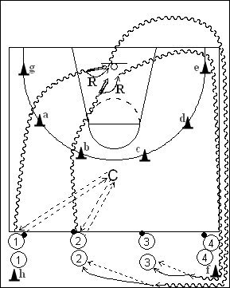

Catégorie : DRIBBLE (Dr-009)
Déroulement
- Quatre files de joueurs au niveau de la ligne médiane. Les premiers joueurs de chaque file ont un ballon.
- En attendant leur départ, les joueurs qui ont un ballon dribblent sur place. Le premier joueur de la file 1 passe son ballon au Coach qui lui remet aussitôt. Celui-ci démarre immédiatement, passe derrière le cône a et effectue un lay-up. Dès la passe retour du Coach au premier joueur de la file 1, le premier joueur de la file 2 passe à son tour le ballon au Coach qui lui rend pour un départ rapide en lay-up en contournant le cône b, et ainsi de suite pour les premiers joueurs des files 3 et 4, puis deuxièmes joueurs des files 1, 2, etc ...
- 1 effectue son rebond, dribble autour des cônes e et f, passe au deuxième joueur de la file 2 et va dans cette file. 2 fait aussi son rebond et le même circuit pour passer au deuxième joueur de la file 3 et aller dans cette file. 3 fera son rebond, contournera les cônes opposés (g et h), passera au deuxième 4 et ira dans cette file. 4 fera le même circuit, passera au deuxième joueur de la file 1 et ira dans cette file. Et ainsi de suite ...
Coaching points
- Insister sur la vitesse de départ du dribble (sans marcher!), aussi bien après la passe du Coach qu’après le rebond.